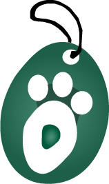

Queremos contarle:
 ¿Quiénes somos?
Mascotic es una empresa colombiana que comercializa artículos como alimentos, juguetes, snacks, cepillos y accesorios para mascotas al por menor y presta el servicio de domicilio, baño, peluquería y embellecimiento de perros y gatos; su fundación fue en el año 2016, alcanzando su estabilidad para el año 2020. Estamos ubicados en el municipio de Zipaquirá en el barrio San Rafael; allí puede encontrar lo que su mascota necesita para tener una vida saludable, vanidad y estilo, contamos con un excelente capital humano que permite brindar una atención al cliente con la prioridad de superar sus expectativas. Mascotic pretende mediante su actividad económica fortalecer los lazos entre dueños y mascotas con sus servicios y productos para así fomentar la tenencia responsable y el trato amable hacia las mascotas.
Misión
Ofrecemos bienestar para perros y gatos mediante servicios de domicilio, baño, peluquería y embellecimiento; además de productos surtidos como alimentos, juguetes, snacks, cepillos y accesorios al mejor precio lo cual representa comodidad para el dueño contando siempre con el respaldo y garantía de nuestra organización.
Visión
Ser reconocidos en el municipio de Zipaquirá por el compromiso y alto grado de calidad en nuestros servicios y productos enfocados en el bienestar de las mascotas teniendo como prioridad la satisfacción de las necesidades de nuestros clientes.
Valores Corporativos
- Respeto: en el trato tanto con las mascotas; miembros de la empresa, clientes y sus necesidades.
- Dedicación y compromiso: entrega en cada una de las etapas del proceso.
- Solidaridad: nos sentimos comprometidos a apoyar y brindar ayuda a instituciones que dediquen sus esfuerzos a la conservación de especies, cuidado de mascotas y adopciones.
- Responsabilidad: obramos con seriedad, en consecuencia, con los compromisos adquiridos con nuestros clientes y proveedores.
- Trabajo en equipo: con el aporte de todos los que intervienen en los diferentes procesos buscamos el logro de los objetivos de nuestra empresa.
- Confianza: cumplimos con lo prometido al ofrecer productos y servicios de calidad a un precio justo.